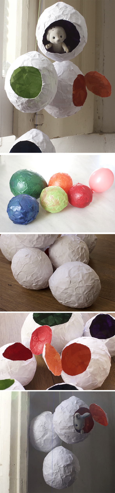

Pegamos trocitos de papel de colores a un globo hasta que esté completamente envuelto, entonces ponemos una segunda capa (en este caso blanco) de papel. Cuando el pegamento se haya secado completamente, dibuje una forma de círculo en el huevo y la recorté con un cutter. El globo estalla y se puede quitar fácilmente. Hannah y Noah querían puertas, así que no hemos acabado de cortar los círculos de todo.
